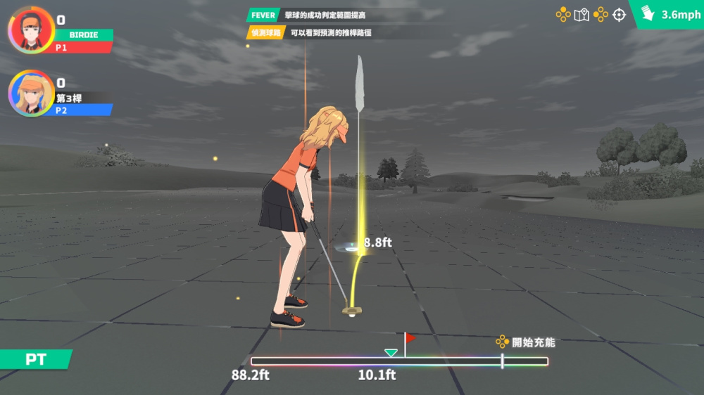
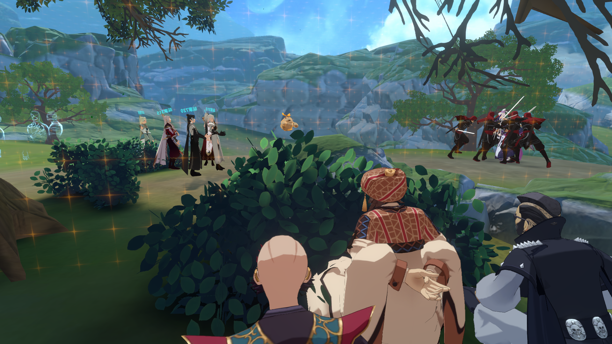
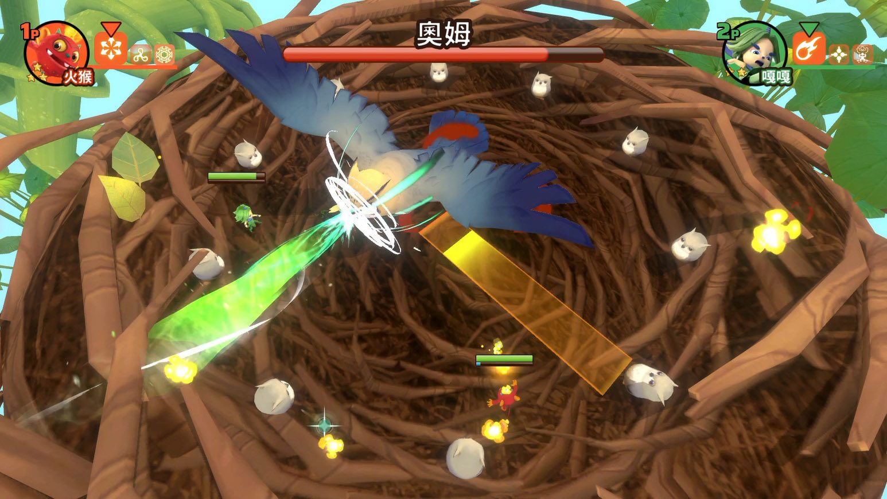

Unity engineer and technical lead with 8+ years of experience taking
games and interactive installations from early technical planning
through release. My work spans Nintendo Switch, location-based VR,
mobile AR, and multiplayer systems. I currently lead a Unity team
while continuing to design architecture and implement core systems.
Experience
WOWWOW Technology Co., Ltd.
Kaohsiung, Taiwan
CTO2024 – Present
Technical Lead2022 – 2024
Senior Unity Engineer2021 – 2022
Unity Engineer2018 – 2021
3D Artist2017 – 2018
Lead architecture and technical decisions for games, XR experiences, interactive installations, and cross-platform applications.
Manage a Unity team of 4, previously up to 7, covering project planning, work allocation, and technical mentoring.
Turn ambiguous client needs into feasible system designs, implementation plans, and acceptance criteria.
Build reusable Unity packages for authentication, VR safety, venue mapping, and photography workflows.
Selected Work
BIRDIE WING -Golf Girls' Story-
Nintendo Switch / Tech Lead / Japanese IP

Gameplay capture showing the trajectory preview system.
Led engineering within a ~16-person team, owning schedules and engineer assignments while defining art asset handoff requirements.
Served as technical liaison with the Japanese animation IP partner, presenting weekly progress and coordinating approvals for 3D character adaptation, animation direction, and game content.
Designed golf-ball physics, trajectory prediction, game-flow architecture, and character dialogue systems.
Optimized grass rendering for Switch hardware and integrated eShop and DLC asset-unlocking features.
Selected Work
Welcome to PILI Universe
Location-based VR / Multiplayer systems / Renowned Taiwanese IP

Shared venue view with players from separate groups.
Designed a multi-group architecture for ~50 concurrent users in independent groups sharing one physical venue.
Built separate coordination layers for within-group gameplay and cross-group position awareness.
Visualized nearby players from other groups as ghost avatars to reduce physical collision risk.
Reduced group admission intervals from ~25 to 5 minutes and packaged the infrastructure as reusable SDK-style modules.
Monster Fruit Academy
Nintendo Switch / Tech Lead / Taiwanese animation IP

Boss encounter designed from concept through implementation.
Led technical development for a ~12-person team, owning gameplay systems and key product decisions.
Built a level editor that let planners configure stages, enemies, and spawn layouts independently.
Designed independently selectable subtitle and voice systems, with Timeline preview and external localization workflows.
Owned core game systems and designed a multi-phase boss encounter that shifted runner gameplay into bullet hell.
Additional Work
ケロロ軍曹 超共鳴展限定アプリ であります！
iOS / Android · AR · AI Integration
Technical liaison for a Japanese IP exhibition app combining AR photography, AI-triggered web content, and iBeacon access with QR fallback.
Kaohsiung Municipal Gangshan Hospital Interactive Kiosk
Windows · Kinect · Touchless Interaction
Integrated and deployed a touchless children's game, mapping head and hand movement to gameplay and owning on-site delivery.
Grandma Fruity's Secret
iOS / Android · Mobile AR · Product Owner
Owned a three-person Public Television Service IP project from client communication through implementation and store release.